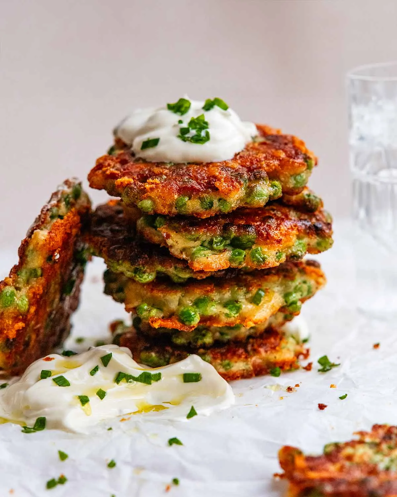

Lasagna

Description
Crispy pea fritters is a handy recipe for those times when your
fridge is bare. Because who doesn’t have some frozen peas lurking
in the back of the freezer? Pull them out, and you’ll have a delicious
stack of fritters ready in just 20 minutes – no need to thaw the peas
first!
Ingredients
- Frozen peas – Just regular frozen peas or baby peas, it works fine for both. No need to thaw or pre-cook. Frozen peas are cooked before being frozen so there's no need to cook it beforehand, they just need to be heated which happens in the time the fritter takes to cook on the stove (3 – 4 minutes).
Fresh peas – For show offs who want to use freshly harvested home-grown peas , blanch the peas, drain well, cool, then use per recipe. No, I'm not jealous at all.
- Cheese – Any melting cheese other than mozzarella can be used (it's not flavoured enough). Cheddar, tasty cheese, colby, Monterey Jack, pepper jack.
Packet shredded cheese is fine, no need to shred your own like I sometimes (strongly!) recommend. I use a 3 cheese blend (mozzarella, colby, parmesan), see photo above.
- Cornflour (cornstarch) AND regular flour – This recipe calls for both because cornflour makes the fritter crispier, but if you just use cornflour then the batter is too gluey and has an unpleasant texture. So the flour adds lightness to the batter while cornflour adds crispiness!
Can you skip the cornflour? Yes you can. The fritter is still fairy crispy thanks to the cheese, but it's crispier with the cornflour. But if I was out, I wouldn't hesitate to make the recipe!
Gluten-free flour – I haven't tried it myself but a reader reported success, saying you wouldn't even know the difference! Given how little batter there is compared to peas, this makes sense. 🙂
- Baking powder – This lightens up the batter a bit so it's not overly dense inside. You can substitute with baking soda (bi-carb).
- Egg and milk (or water) – To make the batter. The egg holds everything together (the ultimate food glue!) and the milk is to loosen the batter a touch to get the right consistency.
- Garlic powder – For a touch of earthy garlic flavour. Substitute with fresh garlic pressed through a garlic crusher or very finely chopped (if the pieces are too big, they won't cook through sufficiently).
- Green onion – For a touch of freshness, though I wouldn't hesitate to make this if I was out.
Substitute with onion (regular or red) – sauté it in a little oil then let it cool before mixing it into the batter (I would add finely minced fresh garlic too).
How to make Crispy Pea Fritters
Here's how to make it. I love that the only thing you need to pull
out the cutting board for is to slice up some green onion!

- Batter first – Put the flour, cornflour, egg, milk,
garlic powder, salt and pepper into a bowl and mix to combine.
- Frozen peas – Add the peas, still frozen, plus the
cheese and green onion. Then mix so the peas are coated in the batter.
It will look like there is not enough batter. Have faith – the little there is sets when cooked and glues the peas together (the cheese helps too). Too much batter = pancake situation = crispiness compromised = disappointing!

- Pack to measure – Scoop up the batter using 3 tablespoon
cookie scoop (# 20) or a 1/4 cup measure. Pack it in tightly.
- Flatten – Place / flick the batter into the pan.
- Flatten the mound to about 1.25cm / 0.5″ thick.

- Flattened! Then repeat with remaining batter to make
4 or 5 at a time.

- Cook for about 1 1/2 minutes on each side until it
is deep golden and crispy. Adjust the heat as needed if it's browning
too quickly or slowly. And be brave – make sure you cook until very golden,
because golden = crispy!
💡TIP: Don't skimp on oil for fritters. Heat enough oil
into your pan so the base is covered completely. Remember, oil thins out as it heats up so it will spread more. If you don't use enough oil, your fritters will end up burnt rather than golden and crispy which is so disappointing.
- Drain the excess oil on paper towels then repeat with
remaining batter. You should get 9 or 10, depending on how tightly you pack
the cup. Then serve with the Lemon Yogurt Dipping Sauce! (Which is just a
mix together situation so I skipped the step photos for that.)
Have these as a meal, serve as a starter, a hearty snack or for breakfast
with a runny egg.
Whatever time of the day it is, the moment you bite into the crispy golden
crust may be the best part of your day. And to think that all it took was
a bag of frozen peas!! I love these sort of emergency recipes. Very handy
when you need to eat, right now,
without going to the store. – Nagi x
Back To Home